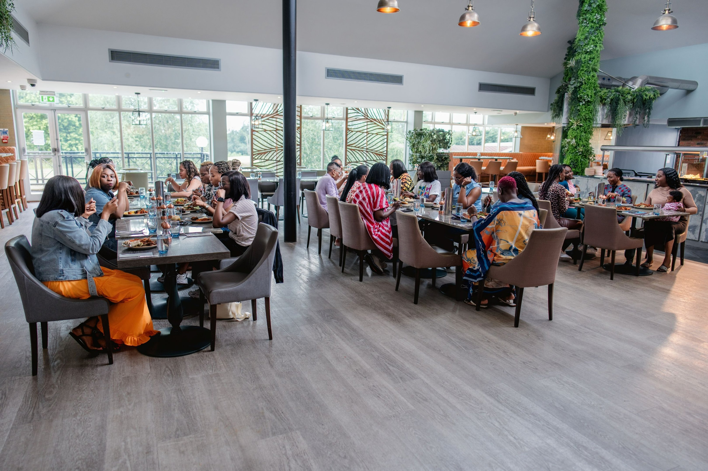
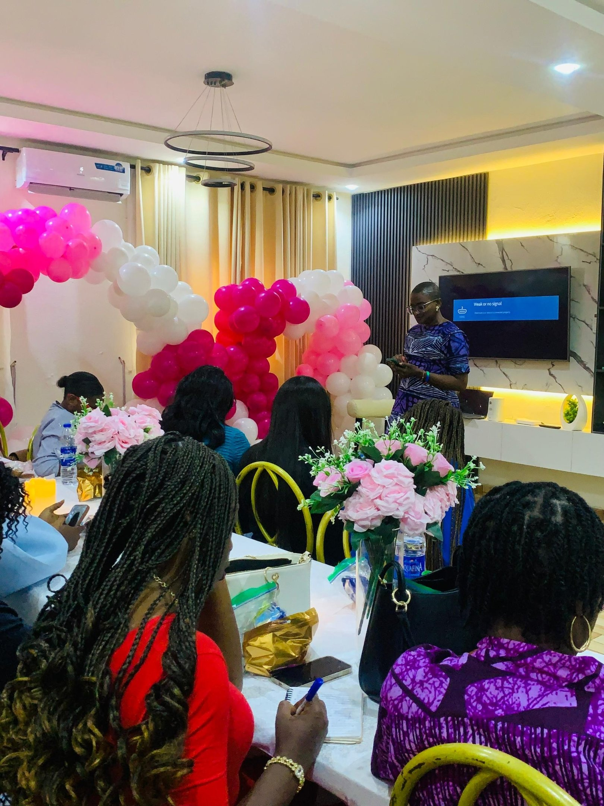

I'm a woman in ministry
Step in freely. Access heart-to-heart teaching, downloads, retreats, and a sisterhood that understands the weight and beauty of ministry life.
Browse the resource libraryA global resource hub for women in ministry
Free teaching, retreats, and a worldwide sisterhood — created so every woman in ministry can be poured into, not just poured out. Everything here is for you, wherever you are.
Find your path
Step in freely. Access heart-to-heart teaching, downloads, retreats, and a sisterhood that understands the weight and beauty of ministry life.
Browse the resource libraryFuel the mission directly. Give a one-time gift or join a partnership tier — no funnels, just clear vision, defined benefits, and behind-the-scenes access.
See partnership & givingResource Library
A growing, searchable library of teaching, downloads, and videos — current and archived — so you can find help the moment you need it.
No resources match your search yet — try another term.
The Book
A heartfelt letter to every woman called to stand beside a pastor. Biblical wisdom, practical guidance, and honest encouragement for the unique joys and challenges of ministry life.
Whether you're navigating the fishbowl effect, balancing family and church, or finding your own identity in ministry, this book meets you where you are — with grace, truth, and understanding.
Rooted in Scripture and Spirit-led wisdom
Real solutions for daily ministry challenges
Written from experience, heart to heart
Pastor May's Story
For years I carried the weight of ministry quietly — loving God's work while struggling to find space to be filled myself. I learned, often the hard way, that thriving in ministry isn't about doing more. It's about being rooted, supported, and reminded of who you are.
Dear Pastor's Wife was born from that journey: a Spirit-led space where women in leadership can grow without losing themselves in the process. Through retreats, conferences, and honest community, my prayer is that you find joy in serving again.
— May Ijisesan
Retreats & Events
A full timeline of retreats for this year and next, so you can choose the dates and location that fit your season. Bring a journal, comfortable clothes, and an open heart.
Global Speaking Schedule
Catch Pastor May live at conferences, churches, and gatherings around the world. New dates are added as they're confirmed.
Want Pastor May to speak at your event?
Request a speaking engagementDPW Virtual Conferences
Too many ministry women carry significant responsibilities without the training, tools, or community strong leadership requires. DPW conferences bridge that gap with targeted, high-impact sessions.
Manage personal and ministry finances with wisdom, strategy, and excellence.
Grow clarity, emotional intelligence, and influence with integrity.

Community
Build friendship with a global community of women who understand your world and want to see you lead with strength and purpose.



"Dear Pastor's Wife has transformed my life and ministry."
Anna, Dallas"The support and guidance I've received are invaluable."
Lisa, AtlantaGive & Partner
The Fundraising Partnership Program creates sustainable, relationship-centered support for Dear Pastor's Wife — deepening alignment with individuals, churches, brands, and organizations that value the health, longevity, and spiritual well-being of ministry families. Give once, or partner with us month to month.
Every amount makes room for another woman to be poured into.
🔒 Encrypted & secure. Card and bank details are processed by a PCI-compliant payment provider — never stored on our servers.
More than a one-time gift — partnership builds predictable, lasting impact for ministry families.
Our partners include
Multi-tier partnership
Each tier builds on the one before it. Amounts are flexible ranges — partner at the level that's right for your season.
For partners & donors
Partners get a quarterly vision letter, impact numbers, and behind-the-scenes photos and video from retreats and outreach — so you can see exactly where your generosity goes.
Join the partner newsletterJoin Us on YouTube
Subscribe for weekly messages, practical teaching, and encouragement specifically for women in ministry leadership.
FAQs
Yes. The resource library is free and open to everyone — the heart of DPW is to serve first.
Any woman in church leadership or ministry life is welcome, anywhere in the world.
Absolutely. Payments are handled by a PCI-compliant, encrypted provider. We never store your card or bank details.
Vision updates, behind-the-scenes photos and video, early invitations, and defined benefits at each tier.
Find your date on the timeline above and follow the registration link, or join the newsletter to be notified the moment it opens.
Yes — use the contact form to request a speaking engagement and the team will follow up.
Connect with us
Send a note to connect, collaborate, request a speaking engagement, or receive updates about the next retreat or conference.
connect@dearpastorswife.org